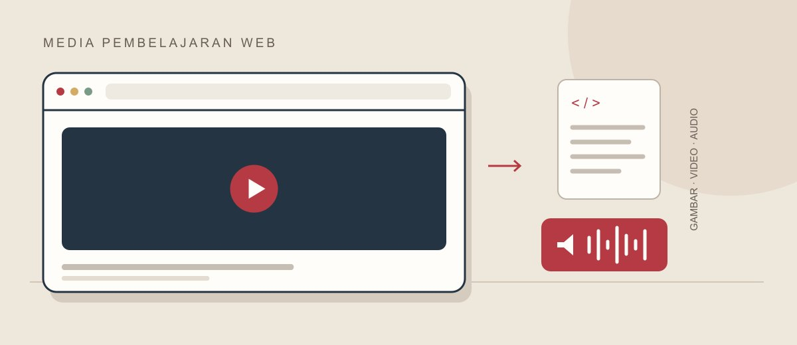

Materi pilihan · Dasar web
Mengenal browser dan media web
Kenali peran browser untuk membuka halaman web, lalu bedakan browser, sistem operasi, dan mesin pencari melalui video singkat. Kamu dapat menonton, mendengarkan narasinya, atau membaca ringkasan.
1. Tonton materi
Video ini menggunakan contoh browser dari tahun 2009. Gunakan sebagai pengantar konsep, bukan rekomendasi versi perangkat lunak saat ini.
Jika pemutar bermasalah: unduh MP4 atau unduh WebM.
2. Dengarkan narasi
Versi audio diambil dari video yang sama dan tetap berbahasa Inggris. Jeda video sebelum memutar audio agar suara tidak bertumpuk.
3. Pahami inti materi
- Browser adalah aplikasi yang digunakan untuk mengunjungi situs dan menampilkan halaman web.
- Sistem operasi mengelola perangkat, berkas, dan aplikasi pada komputer.
- Mesin pencari membantu menemukan informasi di web dan dapat diakses melalui browser.
Baca teks pendamping bahasa Indonesia
Browser merupakan aplikasi penting untuk mengakses web. Banyak orang belum membedakannya dari sistem operasi atau mesin pencari.
Windows dan Mac merupakan contoh sistem operasi. Mesin pencari merupakan layanan web untuk mencari informasi. Browser adalah program yang digunakan untuk mengunjungi situs.
Untuk mengakses situs, buka browser, masukkan alamat web, lalu browser menampilkan halamannya. Video juga mengajak pengguna memilih browser yang sesuai. Contoh dan anjuran dalam video mencerminkan konteks tahun 2009.
Teks ini merupakan ringkasan isi, bukan transkrip kata demi kata.
Sumber dan atribusi
Video: What is a browser? oleh Google, berlisensi CC BY 3.0. MP4 merupakan konversi video; audio diekstrak dari video; poster diambil dari frame video.
Takarir Inggris berasal dari Google melalui Wikimedia Commons. Takarir Indonesia merupakan terjemahan berbantuan AI; format diubah menjadi WebVTT. Kontribusi teks Wikimedia Commons mengikuti CC BY-SA 4.0.
Sampul adalah ilustrasi diagram browser yang disusun untuk tugas ini dengan bantuan AI. Versi desktop menampilkan browser dan dokumen; versi ponsel memusatkan komposisi pada browser dan audio.